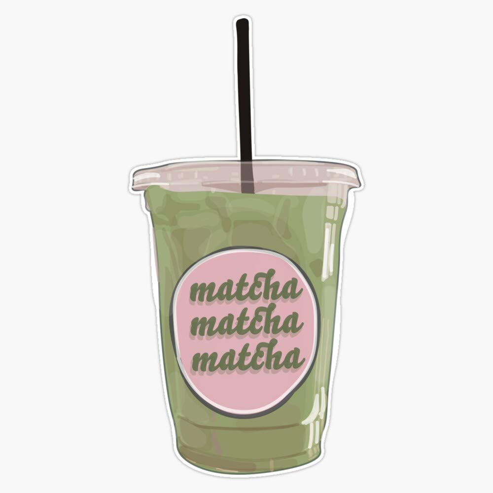
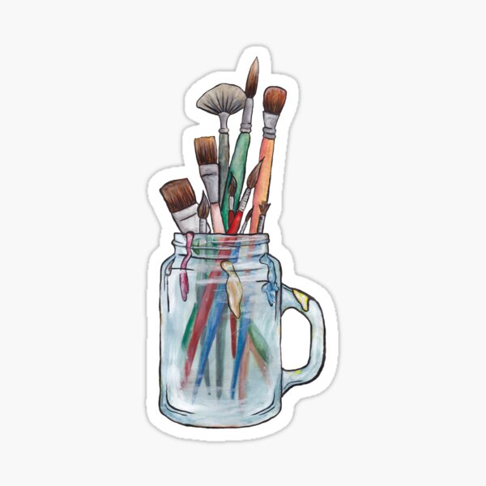
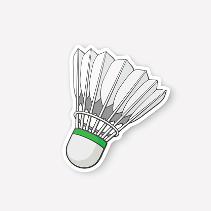
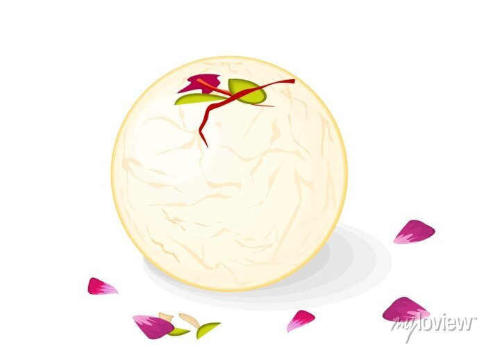
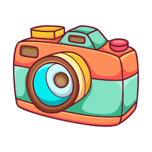
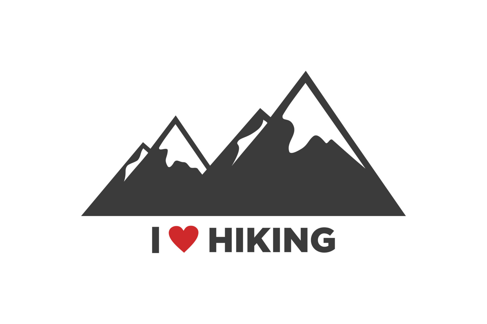
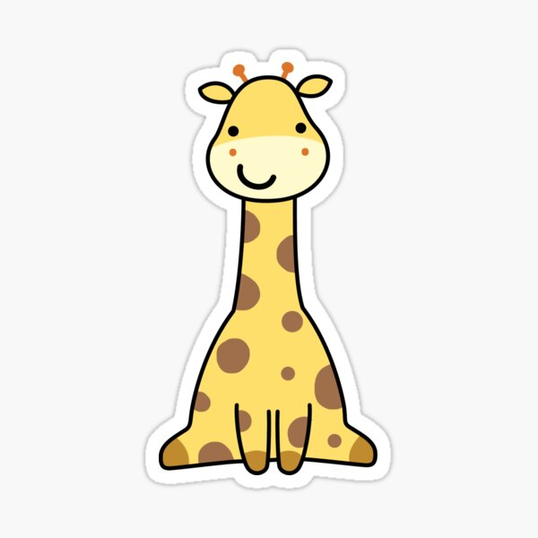

Math @ UWaterloo -
Dissecting problems.
Building intuition.
Hi! I'm Vaibhavi Agarwal, a Mathematics undergraduate at the University of Waterloo exploring probability, data science, and financial modeling.

Hi! I'm Vaibhavi Agarwal, a Mathematics undergraduate at the University of Waterloo exploring probability, data science, and financial modeling.
I am a first year Honours Mathematics student at the University of Waterloo drawn to problems that begin messy and demand precision. Data science and machine learning interest me because they connect mathematical thinking to real world systems and force clarity in the face of noise.
I have been coding since Grade 6, starting with Scratch and continuing consistently through high school. What began as curiosity became a way of thinking. I build projects both in school and independently because I enjoy designing systems that are logical, efficient, and intentional. You can explore some of my work to see that mindset in action.
That same focus on clarity shapes how I approach ideas beyond code. Through Ethics Bowl, I learned to engage with complex issues thoughtfully, consider opposing perspectives, and reason through ambiguity. It strengthened my commitment to fairness, openness, and integrity, values I carry into every team I join.
I am competitive and strategy driven. I played badminton in high school and served as an assistant coach at a volunteer-run, low-cost club built to keep the sport accessible. I mentored younger players and managed volunteers. I am also a regular at poker club, drawn to the probability, discipline, and pattern recognition the game demands.
Moving from India to Canada pushed me to adapt quickly and communicate across different environments. As a tutor and Editor in Chief of Yearbook, I learned how to bring clarity and cohesion to collaborative teams.
Whether in code, competition, or conversation, I look for the system beneath the surface and work to make complexity manageable.






